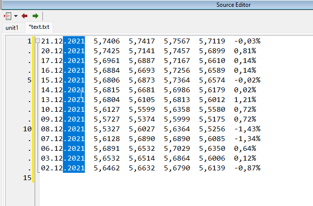

Alguns trechos de programas ou conteúdo de arquivos podem apresentar um padrão colunado, quando isso acontece, temos a chance de usar o Column Mode, um modo de edição presente na maioria das IDEs onde modelos criar, editar ou remover padrões colunados.
Observe este padrão:
Este é um tipo de arquivo colunado, damos esse nome porque suas colunas tem tamanho fixo em todas as linhas do arquivo, nunca avançando sobre outra coluna. Graças a este padrão, podemos fazer algumas coisas nele como selecionar apenas a parte onde mostra o ano "2021" e excluir apenas este trecho no bloco inteiro:

No exemplo acima, com toda uma coluna marcada, basta pressionar "DEL" e todo este trecho será removido.
Mas o column mode também pode ser usado para criar padrões colunados como o código abaixo:
E como fazemos isso?
Usamos a combinação de tecla Shift+Alt e então selecionamos a área em que desejamos atuar e depois começamos a digitar, o que digitamos será espelhado ou replicado para as outras que também foram marcadas.
Pode parecer um pouco estranho de entender com palavras quando isso é dito pela primeira vez, mas ao observar o vídeo abaixo ficará mais claro como o Column Mode funciona:
É muito importante que se lembre disso: Sob padrões colunados podemos criar, editar ou remover textos ou códigos usando o Column Mode.
Todo editor de texto para programação que se preze tem uma opção de Column Mode, pode procurar no seu vscode, vim, emacs, notepad++ e advinha? Claro, no Lazarus também.